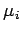
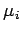

Inhalt Index DeskTop Bronstein

 Wahrscheinlichkeitsrechnung und Mathematische Statistik Wahrscheinlichkeitsrechnung Stochastische Prozesse und stochastische Ketten Poisson-Prozesse
Wahrscheinlichkeitsrechnung und Mathematische Statistik Wahrscheinlichkeitsrechnung Stochastische Prozesse und stochastische Ketten Poisson-Prozesse


Eine erste Verallgemeinerung des POISSON-Prozesses besteht darin, daß man in (16.122) eine vom Zustand i abhängige Übergangsrate  wählt. Als zweite Verallgemeinerung werden auch Übergänge vom Zustand i in den Zustand i-1 zugelassen. Die zugehörige Übergangsrate wird mit  bezeichnet. Der Zustand i eines solchen Prozesses kann z.B. die Anzahl der Individuen einer Population angeben, die beim Übergang von i zu i+1 um ein Individuum vergrößert, beim Übergang von i zu i-1 um ein Individuum verringert wird. Solche stochastischen Prozesse werden Geburtsprozesse und Todesprozesse genannt. Es sei p(Xt=i) =pi(t) die Wahrscheinlichkeit dafür, daß sich der Prozeß zum Zeitpunkt t im Zustand i befindet. Für die Übergangswahrscheinlichkeiten gilt dann analog zum POISSON-Prozeß:
wählt. Als zweite Verallgemeinerung werden auch Übergänge vom Zustand i in den Zustand i-1 zugelassen. Die zugehörige Übergangsrate wird mit  bezeichnet. Der Zustand i eines solchen Prozesses kann z.B. die Anzahl der Individuen einer Population angeben, die beim Übergang von i zu i+1 um ein Individuum vergrößert, beim Übergang von i zu i-1 um ein Individuum verringert wird. Solche stochastischen Prozesse werden Geburtsprozesse und Todesprozesse genannt. Es sei p(Xt=i) =pi(t) die Wahrscheinlichkeit dafür, daß sich der Prozeß zum Zeitpunkt t im Zustand i befindet. Für die Übergangswahrscheinlichkeiten gilt dann analog zum POISSON-Prozeß: